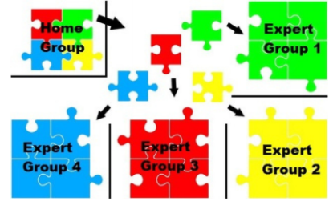
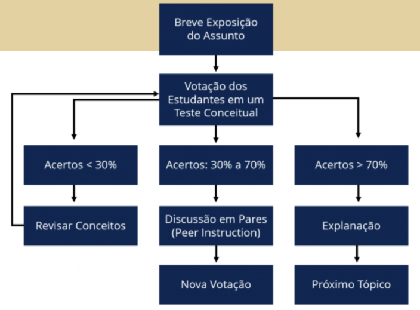

As metodologias Ativas estão fixadas em dois pilares fundamentais: ação e reflexão (BONWELL e EISON, 2018).
Segundo Filatro e Cavalcanti (2018), a seleção da perspectiva mais adequada para a aplicação das metodologias
ativas na educação dependerá do grau de autonomia dos alunos envolvidos. Nesse sentido, as referidas autoras
relatam que, do ponto de vista da pedagogia, normalmente aplicada em ambientes acadêmicos, as metodologias
ativas são utilizadas a partir da fusão entre o cognitivismo e o (socio)construtivismo, sendo relacionada a
contextos reais, citando como exemplo o trabalho em duplas envolvendo mapas mentais. Já na óptica da andragogia,
por envolver sujeitos com autonomia mais desenvolvida, indicam que as metodologias ativas são constantemente
embasadas no construtivismo, com foco no “aprender fazendo”, por exemplo, utilizando a sala de aula invertida.
Por fim, na heutagogia, devido ao seu perfil de autoaprendizagem e conhecimento colaborativo, relaciona-se mais
ao conectivismo, reportando ao alto nível de autonomia do sujeito e ao aprendizado flexível. Por exemplo, o
aluno escolhe o que deseja aprender e se responsabiliza por esse processo.
Na educação a distância a autonomia é naturalmente mais exigida que na modalidade presencial,
pois embora haja a mediação do professor, o aluno é quem precisa administrar o seu tempo de estudo e de
realização das atividades. O sujeito necessita possuir um maior controle e responsabilidade sobre o seu
processo de aprendizagem, reconhecer e ao mesmo tempo criar seus momentos de estudo. Além disso, torna-se
necessário que o indivíduo encontre-se motivado nessa trajetória de aprendizagem. Um importante agente
motivacional é o aluno encontrar um sentido para o conteúdo estudado. Dessa forma, a articulação do
conhecimento com a prática pode ser um forte aliado, pois segundo Dewey (1978), se o conteúdo aprendido
não possuir relação com a vida real, perderá o seu sentido e o seu valor. Verifica-se, portanto,
a necessidade da adoção de novas estratégias pedagógicas na educação a distância, capazes de fomentar a
autonomia do aluno, a integração entre teoria e prática, além do seu perfil digital.
Nesse sentido, na EaD, a utilização de ferramentas digitais educacionais aliada à aplicação de
metodologias ativas pode ser uma forma de propiciar experiências práticas e investigativas ao aluno,
apoiando a construção de um efeito de sentido para o conteúdo estudado.
Seguindo esse propósito, neste módulo são apresentados 3 cases de aplicação de metodologias ativas na
educação a distância através de situações hipotéticas realizadas por meio da utilização de ambientes
virtuais de aprendizagem. O objetivo é demonstrar possíveis caminhos para aplicações das metodologias
ativas em salas de aula virtuais.
Aprendizagem Baseada em Problemas
Os exemplos de aplicação dessa metodologia na EaD ainda são escassos, um dos motivos para isso
seria a falta de pesquisas que falem sobre o tema. Quando combinada à EaD, a aprendizagem baseada
em problemas pode promover o desenvolvimento de competências e habilidades proativas e também
facilitar a aprendizagem multidisciplinar e incentivo ao trabalho em equipe. Na EAD, segundo Bizarria et
al. (2013), esses objetivos podem ser atingidos por meio de criação de atividades que contemplem os
princípios da ABP, como por exemplo: os chats que estimulam as discussões interativas, possibilitando
a criação de texto entre duas ou mais pessoas de forma síncrona; as videoconferências, que possibilitam a
comunicação simultânea entre usuários, por meio de áudio e vídeo; o correio eletrônico, que possibilita
a troca de mensagens escritas e envio de arquivos; os fóruns e o portfólio, que apresenta grande valor
formativo.
Como exemplo de aplicação da ABP na Educação a Distância pode-se citar o exemplo da Licenciatura em Ciências
Sociais da UAB/Unimontes. Foi desenvolvida uma aula experimental por videoconferências para alunos do quarto
período do curso citado, no primeiro semestre de 2015. Utilizaram um problema por disciplina (relacionada com a
ementa) que foi apresentado no primeiro encontro presencial com o docente formador ou docente tutor a distância.
A turma foi dividida em dois grupos com acompanhamento do tutor à distância, nos quais as formulações sobre o
problema foram discutidas e analisadas, no primeiro encontro presencial e foi utilizado um ambiente virtual de
aprendizagem, onde foi aberto um fórum para discussão.
Durante o encontro presencial e na condução dos fóruns, os estudantes deram continuidade ao
estudo do problema, criando questionamentos e possíveis respostas. No segundo encontro presencial,
foi desenvolvido um seminário, no qual os acadêmicos apresentaram as respostas definitivas para as
formulações elaboradas durante o processo de discussão do problema. Para os que não atingiram os
objetivos propostos, no momento do seminário, houve uma reavaliação e direcionamento a novos estudos.
A partir do exposto, vislumbra-se as possibilidades de aplicação da Aprendizagem Baseada em Problemas na
Educação a Distância por meio de ambientes virtuais de aprendizagem e uso de diferentes recursos
tecnológicos, como vídeos, áudios, fóruns, entre outros. O papel dos docentes e tutores se torna essencial
para a mediação das atividades propostas nessa modalidade educativa.
Aprendizagem Baseada em Jogos
A aprendizagem baseada em jogos possui algumas experiências, para o desenvolvimento de competências,
que já utilizam tecnologias em suas aplicações, como por exemplo a utilização de jogos digitais, sejam
eles comerciais ou desenvolvidos especificamente para a educação. É muito comum vermos a ABJ associada
a Gamificação, mas, cabe salientar que um processo gamificado nem sempre é um jogo (ALVES, 2015). Jogos
educacionais bem projetados oferecem oportunidades contínuas de aprimoramento de jogadores.
Seus feedbacks devem ser imediatos, suas tarefas podem ter níveis de complexidade oportunizando que
qualquer indivíduo possa resolver sozinho. Em jogos digitais os ambientes podem mudar conforme as
respostas e ações dos estudantes.
Como exemplo da aplicação da aprendizagem baseada em jogos pode-se citar a experiência realizada
na disciplina de Atenção Farmacêutica II ofertada na modalidade EaD no currículo de Graduação da
Faculdade de Farmácia da Universidade Federal do Rio Grande do Sul (UFRGS).
A estratégia de aprendizagem baseada em jogos denominada Gincana proporciona ao estudante a
vivência do trabalho em equipe e o desenvolvimento da criatividade no planejamento das tarefas,
adicionalmente à consolidação do conteúdo trabalhado em aula (GOSSENHEIMER, CARNEIRO e CASTRO, 2015).
Na proposta as equipes foram formadas e tarefas eram formuladas e trocadas entre elas, sendo avaliadas
pela construção da tarefa, factibilidade, pertinência de conteúdo e respostas elaborada. A ferramenta
para as equipes interagirem e resolverem as tarefas foi um Fórum síncrono, ou seja, todos estavam
online, para realizar as discussões significativas.
A proposta elaborada por GOSSENHEIMER, CARNEIRO e CASTRO (2015) consiste em iniciar com um fórum que é
utilizado para o grupo de estudantes compartilhar e registrar a elaboração das tarefas. Na sequência,
a equipe elaboradora disponibiliza, em um local específico no ambiente virtual, um documento com as
tarefas elaboradas. As mesmas são analisadas pelos professores, utilizando‑se de critérios e
considerando‑se a factibilidade de realização da tarefa no ambiente virtual. No segundo momento da aula,
as equipes se reúnem no Fórum de Resolução das Tarefas e possuem um tempo de uma aula para realizar e
postar as mesmas.
A partir desta experiência, observam-se as possibilidades de aplicação da Aprendizagem Baseada em Jogos
na EaD com o suporte dos ambientes virtuais de aprendizagem. Pode-se utilizar diferentes recursos
tecnológicos já presentes na ferramenta AVA, tais como fóruns, bibliotecas, bate papos, bem como, há
a possibilidade de indicação de jogos virtuais já elaborados e contextualizados para o objetivo
pedagógico. O estudante também é considerado um produtor de conhecimentos e na proposta das
metodologias ativas (MORAN, 2012) o mesmo pode e deve ser envolvido em suas construções,
como exposto pelo estudo de GOSSENHEIMER, CARNEIRO e CASTRO (2015).
Exemplo de utilização das metodologias ativas na educação a distância
Aprendizagem Baseada em Projetos
O professor organiza a turma em grupos de trabalho de
até 4 integrantes. Solicita que cada grupo crie um objeto
inédito ou aprimore um já existente com o objetivo de
suprir alguma necessidade visualizada na sociedade.
Etapa 1
Cada grupo seleciona, no mínimo, 3
necessidades passíveis de serem trabalhadas.
Define as características do público-alvo e do
problema. Analisa as opções e optam por uma
delas.
Etapa 2
Imagina possíveis formas de solucionar o
problema. Escolhe uma. Elabora um
protótipo de baixa fidelidade* dessa solução.
*Os protótipos de baixa fidelidade visam analisar, testar ou aperfeiçoar uma solução
que ainda está em elaboração. Não precisa apontar todas as funcionalidades do
produto. Pode ser construído em papel, como um rascunho do elemento que está em
idealização. É uma forma de exteriorizar uma ideia para melhor visualizar e corrigir as
suas possíveis fragilidades. Fonte: https://startupsorocaba.com/startup-sorocaba-o-que-
sao-prototipos-de-baixa-e-alta-fidelidade/
Etapa 3
A partir da avaliação do protótipo (pelo
grupo e professor), o grupo aprimora a
solução encontrada.
Etapa 4
Cada grupo realiza a conclusão da sua
proposta através da aplicação do
conteúdo em estudo e da análise
realizada na etapa 3.
Etapa 5
Apresentação para a turma do problema
e da solução proposta através do projeto
do objeto criado ou aprimorado.
Aprendizagem Baseada em Problemas
Você professor, precisa tratar de um assunto que seja
relativo à profissão que seu aluno está aprendendo ou ao
contexto social dele. Para isso, busque em sites de notícias
ou redes sociais histórias ou relatos de profissionais que
enfrentaram situações complexas capazes de abranger
diferentes soluções (não há uma solução fixa).
Etapa 1
Cada grupo seleciona, no
mínimo, 3 necessidades
passíveis de serem
trabalhadas. Define as
características do público-alvo
e do problema. Analisa as
opções e opta por uma delas.
Etapa 2
Depois da aprendizagem
individual, os estudantes
aplicam seus novos
conhecimentos e avaliam suas
hipóteses à luz do que
aprenderam. Para isso, eles
podem utilizar um fórum ou
fazer uma apresentação por
meio de um vídeo ou
apresentação multimídia
através de uma plataforma de
comunicação online.
Etapa 3
Nesse fórum ou apresentação
multimídia, deve-se ter um
momento onde os alunos
possam conversar e reconsiderar
suas hipóteses ou, se for
necessário, gerar novas. Para isso
pode ser utilizado chat ou
plataforma de comunicação online.
Etapa 4
Após essa conversa, podem
descrever suas soluções
encontradas para o problema e
postar no seu portfólio digital.
Etapa 5
Quando completam essa tarefa,
os aprendizes procuram abstrair
as lições aprendidas durante o
ciclo da ABP comentando no
portfólio digital dos colegas
sobre quais caminhos seguiram
para encontrar a solução.
Aprendizagem Baseada em Jogos
O professor organiza a turma em grupos de até 4
participantes. Com base nos conhecimentos elencados
para a unidade curricular, a qual eles estão cursando, os
grupos devem elaborar jogos para desafiar os demais
grupos, montando um circuito de jogos para a turma
como trabalho final.
Etapa 1
Proponha que os estudantes organizem o enredo do
jogo, este enredo deve possuir: (1) definição de cenários
que estarão diretamente relacionados com o objetivo
da atividade e também conter aspectos do mundo real,
(2) a descrição de personagens que estarão presentes
no jogo. Este projeto pode ser postado no portfólio
digital para que os demais grupos deem sugestões.
Proposta de mediação docente: Qual é o objetivo
deste jogo? Onde, quando, como e com quem se
desenvolvem as ações do jogo? O que acontece
nesse jogo?
Etapa 2
Após a construção e validação do enredo, é hora de
construir as Regras e Desafios do jogo. Eles podem ser
organizados em escala crescente, de forma que um
desafio pode ser sucedido por outro de maior
complexidade e dificuldade.
É importante que cada desafio possua a definição de
pontuações, os bônus disponíveis, os níveis de
dificuldade e de avanço no jogo, além das tarefas a
serem cumpridas pelos personagens.
Lembre-se de planejar os feedbacks prevendo novas
oportunidades, caso um desafio não seja cumprido.
Esta construção poderá ser realizada dentro do fórum de
cada jogo - é importante que os integrantes do grupo
colaborem e tenham consenso com as regras. Proposta de mediação docente: O que os estudantes
podem fazer? O que não podem? Quais são os níveis e
desafios a cumprir em cada nível? Quais são as
recompensas? Quais são os desafios do jogo? Os
desafios são individuais ou coletivos?
Etapa 3
É hora do play test, os estudantes deverão testar o jogo e
registrar todos os ajustes e percepções relativos aos
desafios, entendimento das regras, níveis de dificuldade
e tempo que levaram para concluir o jogo.
Recomende para seus alunos que testem o jogo com
pessoas que não acompanharam o desenvolvimento, mas
que possuam conhecimentos prévios que sejam
compatíveis com a proposta.
As ferramentas que podem ser usadas nesta etapa são
chat e webconferencia. Proposta de mediação docente: O tempo planejado
foi adequado? os participantes compreenderam as
regras? os desafios foram adequados? os desafios
cumpriram a escala de dificuldade? será preciso
replanejar o jogo?
Etapa 4
Nesta etapa, acontece o circuito de jogos. Os grupos
deverão jogar os jogos dos colegas.
Você pode organizar a turma com jogadores individuais,
em equipes de jogadores que competem entre si ou uma
única equipe com toda a turma para cumprir as tarefas.
Proponha modos de comunicação síncrona para os
jogadores como o chat ou webconferência.
Para cada etapa vencida, deve-se apresentar feedbacks
imediatos aos estudantes, prevendo novas
oportunidades caso um desafio não seja cumprido.
O que se deseja é que todos concluam os desafios
propostos de forma competitiva, coletiva ou
colaborativa. Proposta de mediação docente: O que é preciso fazer para ganhar o jogo?
Etapa 5
Nessa etapa, é hora de avaliar as aprendizagens.
Proponha que os estudantes reflitam sobre cada ação
realizada durante o jogo. Os pontos de dificuldade e as
estratégias que lançaram mão para superá-los são
analisados e debatidos. Esta discussão poderá ser feita
no fórum de avaliação de cada jogo. é importante que os
estudantes sejam instigados a projetar um plano a partir
das percepções da experiência vivida no jogo.
Proposta de mediação docente: O que aconteceu nesse jogo? O que desenvolvemos?
Quais foram minhas atitudes? quais meus pontos fortes no grupo? O que eu preciso aperfeiçoar?
Na metodologia estudo de caso, o professor pode elaborar
um caso ou selecionar um que seja conhecido. O caso
selecionado pode conter questões simples ou complexas, e é
necessário a disponibilização de gráficos, tabelas e figuras
para subsidiar a análise dos alunos. A estrutura do caso pode
variar, podendo ser um relato completo de uma situação ou
conter perguntas estruturadas que direcionam o caminho
para a solução que o estudante irá encontrar.
Etapa 1
Inicialmente você pode propor a leitura individual do caso. É
importante que você instigue os estudantes a construírem
registros sobre seu entendimento e, de acordo com seus
conhecimentos prévios, organizem as características da
problemática proposta pelo caso. Sugerimos que você
disponibilize o caso na biblioteca e proponha que o
estudante compartilhe seus registros no portfólio digital. Proposta de mediação docente: Qual é o problema central?
Quais são as variáveis do problema central? Existem
problemas secundários? Há um encadeamento das
problemáticas?
Etapa 2
Nesta etapa, será feita a seleção dos grupos. Tenha o
cuidado de fazer a escolha dos componentes de forma
que as habilidades dos estudantes possam ser um
elemento de riqueza para a proposta de solução.
Proponha que cada estudante apresente seus registros
aos colegas. É importante que os estudantes consigam
compor a estratégia de solução com os elementos
pensados pelo grupo. Sugira aos estudantes que reúnam
as ideias parecidas e realizem um refinamento.
Nesta etapa, sugerimos que você utilize o fórum para
exposição de ideias e registros, que pode ser específico
para cada um dos grupos. Proposta de mediação docente: A sua intervenção deve
ser focada na provocação sobre novas perspectivas e
orientação da discussão para os pontos centrais
apresentados no caso. Delegue aos grupos a organização
do seu próprio trabalho. Lembre-se de registrar as
contribuições individuais dos estudantes durante a
condução do trabalho. Esta pode ser uma estratégia
importante para a avaliação dos grupos.
Etapa 3
Organize os grupos de modo que possam apresentar
suas soluções.
Neste momento, você pode conduzir as discussões, e
propor que eles exponham e defendam suas ideias. A
discussão pode ser organizada em diferentes formatos,
por meio de perguntas, seminários ou com o uso de
recursos audiovisuais.
O centro de todo o processo são as ideias e
argumentações dos alunos, não sendo necessário que
cheguem a uma resposta única, sendo que a qualidade
da argumentação é o mais importante.
Nesta etapa sugerimos que usada uma plataforma de
comunicação online para que os estudantes possam
trocar ideias e também articularem suas argumentações.
Os registros podem ser feitos em um fórum
posteriormente. Proposta de mediação: Quais são as soluções dos
grupos? As ideias são convergentes? É possível combinar
ideias para solução?
Gamificação
Para a gamificação ser implantada em suas aulas será importante
definir um enredo, a representação dos personagens, os sistemas de
recompensas, a competição e a cooperação entre os participantes
bem como os objetivos a serem cumpridos em níveis crescentes de
dificuldades. Todos esses elementos devem ser organizados sob regras
claras, com previsão das possibilidades de tentativa e erro,
interatividade e interação entre os alunos. Esta proposta está centrada
na gamificação estrutural, que não tem a intencionalidade de
transformar o conteúdo abordado na estrutura do processo. As etapas
de criação são ação do docente.
Etapa 1
Nesta etapa será construído o enredo, que é a
estrutura da narrativa do jogo. é Importante que
você defina os cenários, descreva os personagens,
unindo-os; Lembre-se que esta narrativa deve
conter elementos instigantes e suficientemente
motivadores para os alunos
Etapa 2
Nesta etapa serão construídas as regras, que são o conjunto de
mecânicas que deverão ser seguidas para se atingir os desafios
propostos. Construa regras claras e que não tenham espaço para
interpretações diversas, elas deverão ser estabelecidas desde o
início do processo e não devem ser alteradas durante sua execução.
Não esqueça de envolver as funcionalidades do ambiente virtual
que você irá utilizar, pois é nele que os estudantes deverão
interagir.
Etapa 3
Nesta etapa, você deverá construir um sistema de pontuação.
Ele indica para o estudante o seu desempenho nas atividades,
lembre-se que além do aspecto quantitativo da pontuação,
você precisa construir um acompanhamento qualitativo do
desempenho dos estudantes, ele deve indicar os avanços e
dificuldades, bem como auxiliar o processo de aprendizagem
no decorrer das atividades. Você pode elaborar um placar
utilizando uma ferramenta de Portfólio Digital para que os
grupos acompanhem seus desempenhos e, não esqueça de dar
feedback aos participantes por meio de mensagens!
Etapa 4
Na última etapa de seu planejamento de Gamificação, é
importante definir os níveis de dificuldade, eles devem se
articular com as pontuações, pois servem como gatilho para
a melhoria de desempenho do estudante. A proposta deverá
contar com níveis diversos de dificuldades, do mais fácil ao
mais complexo. Lembre-se que os níveis devem ser
progressivos, ou seja um nível deve ser sucedido por outro de
igual ou maior dificuldade. Sugerimos que você crie
classificações visuais para que consiga ter uma ideia
completa ao final da construção.
Jig Saw

Etapa 1
Forme os grupos Jigsaw com até 4 estudantes.
Para uma melhor comunicação mediada pela
tecnologia, trabalhar com grupos menores
pode ser mais produtivo. No ambiente virtual é
ainda mais importante trabalhar com planilhas
organizadoras que demonstrem claramente
como o conteúdo foi dividido para ser
trabalhado. Lembre-se de dividir o conteúdo
igualmente conforme o número de grupos
especialistas.
Etapa 2
Divida os estudantes nos grupos de
especialistas. Para que esse processo seja
efetivo, recomendamos o uso de uma
plataforma que possua a funcionalidade de
criação de salas auxiliares.
Você iniciará a sessão com os todos os
estudantes no mesmo ambiente e, depois
das explicações e diretrizes iniciais, serão
criadas salas de apoio. Nessas salas serão
direcionados os estudantes de cada grupo
especialista de acordo com a divisão dos
temas. Um exemplo: Imagine que você possui 20
estudantes e dividiu seu conteúdo em 4
partes. Você possuirá 4 grupos especialistas
com 5 estudantes. Posteriormente, você
possuirá 5 grupos Jigsaw com 4 estudantes
em cada grupo.
Etapa 3
Quando os estudantes já estiverem nas salas
com os demais membros dos grupos de
especialistas, disponibilize o material a ser
utilizado, bem como um guia com perguntas
norteadoras sobre cada parte do conteúdo.
Informe aos estudantes que terão um tempo
inicial para a leitura individual e que,
posteriormente, também será disponibilizado
tempo para discutir sobre as percepções de
cada um. Proposta de mediação docente: Relembre os
estudantes das etapas presentes no estudo dos
especialistas: (1) estudo individual, (2)
compartilhamento de ideias e percepções
(encoraje o compartilhamento de tela e uso do
chat pelos estudantes), (3) planejamento da
estratégia de ensino.
Etapa 4
Remonte os grupos Jigsaw. Para isso será
necessário criar novas salas de apoio. Agora
você terá 5 salas com 4 estudantes em
cada, levando em consideração aquele
exemplo de uma turma com 20 estudantes
e um conteúdo quebrado em 4 partes. Proposta de mediação docente:
Acompanhe os especialistas e apoie-os no
compartilhamento das informações com os
colegas. Instigue-os a utilizar recursos
variados em suas explanações.
Etapa 5
Envie para os estudantes um teste que cubra todo
tema que foi trabalhado na sessão. Este envio
pode ser por meio de recursos como o Google
Forms ou Microsoft Forms.
Proposta de mediação docente: é importante que
você tenha o rastreamento adequado das
perguntas de modo que sejam facilmente
identificadas as lacunas nas respostas dos
estudantes, permitindo uma fácil retomada.
Etapa 6
Retorne com todos os participantes da sessão para o
mesmo ambiente e conduza uma sessão de discussão
ou acompanhamento que cubra todo o conteúdo.
Proposta de mediação docente: Quais foram os
principais tópicos do conteúdo? De que forma foram
conduzidas as aprendizagens? Quais foram os
recursos utilizados pelos colegas? Quais foram as
principais dúvidas que ocorreram no processo?
Peer Instruction
Esta metodologia foi desenvolvida pelo
Prof. Eric Mazur no contexto de suas aulas
de física no ensino superior.
Etapa 1
Indique para o estudante qual o material
ele deverá acessar previamente ao
encontro online. Trabalhe com diferentes
formatos (texto, áudio e vídeo) e deixe
claro quais são os objetivos de
aprendizagem. O material pode ser
enviado por e-mail ou postado em um
AVA.
Etapa 2
Já no ambiente virtual, inicie o processo de apresentação
das questões conceituais para que os estudantes reflitam
e respondam individualmente.
O lançamento das questões ocorrerá por meio do
computador ou outros dispositivos, como celulares e
tablets, sendo que uma das possibilidades de ferramenta
para esta etapa é a utilização do aplicativo Socrative ou
o Mentimeter que permite a elaboração e
compartilhamento de perguntas de múltipla escolha,
verdadeiro/ falso ou abertas.
O educador consegue visualizar os resultados dos
estudantes, individualmente e em tempo real.
Etapa 3
Após a exposição dos resultados da questão
respondida individualmente, podem ocorrer os
seguintes cenários:

Peer Instruction
Se o resultado da votação acabar em mais de 70% de
acertos, comente a questão, argumentando sobre a
pertinência da alternativa considerada correta e
apontando o que está incorreto nas demais alternativas.
Após realizar esta argumentação, pode avançar ao
próximo tópico.
Se menos de 30% dos estudantes acertaram as questões,
é sinal de que a maior parte ainda não compreendeu, é
aconselhável que o conteúdo seja explicado novamente,
de preferência, com uma abordagem diferente e que
todo processo seja retomado. Neste caso, o processo
inicia novamente com sua explicação e só então os
estudantes respondem novas questões.
No caso da taxa de acerto das respostas ficar em torno
de 30% a 70%, crie as salas apoio e direcione pequenos
grupos de estudantes para as mesmas para que eles
possam discutir a questão.
Sinalize que os estudantes terão um tempo pré-
determinado (em torno de 5 minutos) para a discussão
em grupo nas sala de apoio e que retornarão para a sala
principal para votar novamente.
Etapa 4
Ao final das etapas de perguntas, discussão e
argumentação, faça um apanhado geral dos principais
conceitos debatidos utilizando recursos visuais como o
Google Apresentações ou Google Jamboard.
Desafio
Neste módulo você pôde visualizar conceituações e exemplos relacionados à aplicação das
Metodologias Ativas na EaD. Agora, chegou o momento de você refletir sobre possíveis formas
de aplicá-las em suas práticas pedagógicas, através dos desafios propostos a seguir. Bom
estudo!
Desafio 1 – Investigando Aplicações das Metodologias Ativas na EaD
Para ampliar o seu repertório sobre a aplicação das metodologias ativas na EaD, pesquise
artigos e trabalhos que apresentem a sua utilização em sala de aula. Selecione duas propostas
e as registre através de uma resenha. Assim, no futuro, esse material poderá servir de
referência para as suas práticas pedagógicas.
Desafio 2 – Aplicando as Metodologias Ativas em Práticas Pedagógicas
A partir dos exemplos de aplicação das MA na EaD disponibilizados neste módulo e do material
que você selecionou no desafio anterior, planeje a utilização de uma metodologia ativa para a
abordagem de um conteúdo da sua área de atuação. Você pode utilizar a seguinte estrutura:
1. Nome da metodologia ativa escolhida
2. Conteúdo a ser abordado
3. Objetivo da prática pedagógica
4. Procedimentos a serem utilizados em uma ou mais aulas EaD para abordar o conteúdo na metodologia ativa selecionada.
Referências
BIZARRIA, Fabiana Pinto de Almeida; TASSIGNY, Mônica Mota; BASTOS, Adriana Teixeira; OLIVEIRA, Artur Gomes de. Aprendizagem Baseada em Problemas em Contextos de Educação a Distância. Revista EDaPECI, v. 13, n. 2, p. 278-297, 2013.
BONWELL, C. C.; EISON, J. Active Learning: Creating Excitement in the Classroom. 1991.2018. Disponível em: neste link. Acesso em 17 jul. 2020.
DEWEY, J. Vida e Educação. 10. ed. São paulo:Melhoramentos, 1978.
DE ALMEIDA, Versiéri Oliveira; SILVA, Helena Terezinha Hubert; BONAMIGO, Andrea Wander. Aprendizagem Baseada em Problemas na Educação a Distância e as Influências para Educação em Saúde: Uma Revisão Integrativa. Revista Brasileira de Aprendizagem Aberta e a Distância, v. 17, n. 1, 2018.
ALMEIDA, Cláudia Regina Santos de; CAMARGO, Mônica Nogueira; CAMARGO, Luana Brito. Educação popular e aprendizagem baseada em problemas na EAD: Uma aplicação no curso de Ciências Sociais EAD/ UNIMONTES. Revista de divulgação científica do Centro de Educação a Distância da Universidade Estadual de Montes Claros-CEAD/Unimontes, v. 4, n. 01, 2016.
FILATRO, Andrea; CAVALCANTI, Carolina Costa. Metodologias Inov-ativas na educação presencial, a distância e corporativa. 1.ed. São Paulo: Saraiva Educação, 2018.
GOSSENHEIMER, Agnes Nogueira; CARNEIRO, Mára Lúcia Fernandes; CASTRO, Mauro Silveira de. Estudo comparativo da metodologia ativa" gincana" nas modalidades presencial e à distância em curso de graduação de farmácia. ABCS health sci, 2015.
MORAN, José Manuel. O que é um bom curso a distância. Visitado em, v. 20, p. 12, 2012.